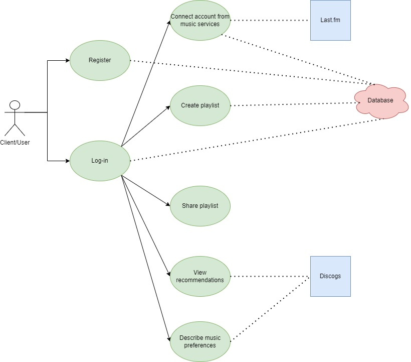

Community Draft
Recommendation systems are AI algorithms that use data to foresee what people are looking from a number of options
a service can offer. These systems use Big Data in order to recommend products to users and are trained to understand
the users' preferences, characteristics and various interactions.
Music streaming services are streaming medias that focus on music listening, as well as podcast listening. They have
built in a recommender system to help users discover other songs based on their listening history (and purchases) and
even playlist creation and sharing.
In this report, we aim to create a Web recommender system that operates with RDF data. We include here details regarding
the software architecture, the end-user details and the use of an ontology along with its vocabularies.
ViRe is a (micro-)service Web system able to "intelligently" recommend – by exposing a SPARQL endpoint – vinyl music records according to various criteria: user preferences (specified via controlled natural language constructs such as "I always like/love/prefer classical music, especially opera music by Rossini or Verdi and performed by Angela Gheorghiu or Juan Diego Flórez; I sometimes like progressive rock and post-rock; I like only metal albums released before 2000; I always dislike/hate rap and hip-hop; I dislike songs produced by Flood in the last 25 years"), past song purchases on various music stores, playlists – available online via music streaming services: Last.fm and alternative solutions – and/or locally – for instance, by uploading a JSPF/XSPF document. The playlists could be created by the user or shared by her/his virtual "friends" (consider at least one social network). The system uses several music-related knowledge models (e.g., Music Ontology or MusicRecording concept from schema.org) and available public resources: Discogs, MusicBrainz, Musicmoz Music Styles.
We are proposing a service Web system which will consist in using a streaming service (Last.fm, Spotify, etc.), a musical public resource (Discogs) and a knowledge model (Music Ontology). The system will also be accompanied with a user-friendly interface.
Python is an interpreted, object-oriented, high-level programming language with dynamic semantics. Its high-level built in data structures, combined with dynamic typing and dynamic binding, make it very attractive for Rapid Application Development, as well as for use as a scripting or glue language to connect existing components together. Python's simple, easy to learn syntax emphasizes readability and therefore reduces the cost of program maintenance.
Django is a high-level Python web framework that encourages rapid development and clean, pragmatic design. Built by experienced developers, it takes care of much of the hassle of web development, so you can focus on writing your app without needing to reinvent the wheel. It was designed to help developers take applications from concept to completion as quickly as possible and takes security seriously and helps developers avoid many common security mistakes.
PostgreSQL is a powerful, open source object-relational database system that uses and extends the SQL language combined with many features that safely store and scale the most complicated data workloads. It has earned a strong reputation for its proven architecture, reliability, data integrity, robust feature set, extensibility, and the dedication of the open source community behind the software to consistently deliver performant and innovative solutions.
SPARQL is the standard query language and protocol for Linked Open Data and RDF databases. Having been designed to query a great variety of data, it can efficiently extract information hidden in non-uniform data and stored in various formats and sources.
The OpenAPI specification for the methods that we use in this project can be found here.

The user module allows users to register and log into the app. Entering into the app enables users to view recommendations, select their preferences, as well as create their own playlists.
We suggested a recommendation service that is based on the likes/dislikes of various artists and genres and purchases (in any format) of songs and albums. The user simply searches for either the artist's/band's name or the genre in the pages dedicated for likes, dislikes and purchases. Based on the saved preferences, the recommendations are shown below.
The playlist service needs data about who created it and which songs are included with it, along with its relevant details (artist, album, year etc.).
Last.fm is a global online music service that tracks people’s music listening habits - across many devices/platforms
and via its world-class personalized music service – to help them discover and share new music through recommendations,
exploration and the integration of social networking tools.
In order to gather necessary data, we're using Last.fm's own API. The Last.fm API allows anyone to build their own programs using the data
from the streaming service.
Discogs is an essential tool for music fans and record collectors at any step in their journey, from resources to explore artists’ discographies
of music releases to tools that help you organize and build your collection. Discogs’ discography database and global online marketplace of vinyl,
CDs, and cassettes from collectors and sellers worldwide puts music discovery and must-have records at your fingertips.
To gather information about a persons' purchases of such physical media, The Discogs API v2.0, a RESTful interface to Discogs data, comes to help.
The Music Ontology provides a vocabulary for publishing and linking a wide range of music-related data on the Web. Music Ontology data
can be published by anyone as part of a web site or an API and linked with existing data, therefore creating a music-related web of data.
To operate with this vocabulary, we use RDF (Resource Description Framework) to identify relationships between each characteristic.
With this, The Music Ontology Specification is useful for obtaining concepts and properties that describe music on the Semantic Web. In order to use it, the
following namespaces must be added:
@prefix mo: http://purl.org/ontology/mo/ .
@prefix dc: http://purl.org/dc/elements/1.1/ .
@prefix xsd: http://www.w3.org/2001/XMLSchema# .
@prefix tl: http://purl.org/NET/c4dm/timeline.owl# .
@prefix event: http://purl.org/NET/c4dm/event.owl# .
@prefix foaf: http://xmlns.com/foaf/0.1/ .
@prefix rdfs: http://www.w3.org/2000/01/rdf-schema# .
@prefix dc: http://purl.org/dc/elements/1.1/ .
@prefix ns1: http://purl.org/ontology/mo/ .
@prefix xsd: http://www.w3.org/2001/XMLSchema# .
http://purl.org/ontology/mo/#track-Diamond a ns1:Track ;
dc:title "Diamond" ;
dc:year 2022 ;
ns1:artist "Black Scorpion Music" ;
ns1:genre "Electronic" .
React (also known as React.js or ReactJS) is a free and open-source front-end JavaScript library for building user interfaces based on components. React can be used to develop single-page, mobile, or server-rendered applications with frameworks like Next.js. Because React is only concerned with the user interface and rendering components to the DOM, React applications often rely on libraries for routing and other client-side functionality.

Linked Data alludes to a series of recommended practices for publishing data in any structure and engaging with it. The main goal is to create an infrastructure that makes the information, readable by humans, understandable by the machines and easily accessible to operate with Semantic Web tools. It is accomplished by following these principles:
In the context of this app:
This application was made as a project for the Web Application Development course and thanks to our instructor .